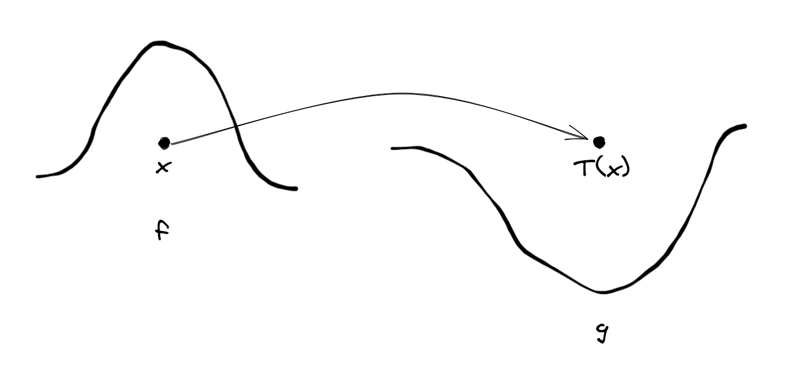

The Monge Problem
Analogy
We would like to move a pile of dirt from its current position into a hole in the ground. Each sub-portion of this total pile has a weight. To minimise our required 'effort', we try to move heavier sub-portions smaller distances. The Monge Problem asks we find the smallest amount of 'effort' required to move the entire pile.

Mathematically this can be expressed as the following integral:
\[ \text{min}_T \int \left | x - T(x) \right | f(x) \text{d}x \]
Here, we try to find a minimising map \(T\), which associates each point with a new location (i.e. from pile to hole). The cost we are minimising, tries to maintain a small distance between the original and new location \(\left | x - T(x) \right |\) while also taking into account the 'effort' required for each move \(f(x)\).
A more typical formulation, however, generalises this integral further, considering not just distances, but arbitrary costs \(c(x, y)\) over the mapping.
\[ \text{min}_T \int c(x, T(x)) f(x) \text{d}x \]
Further generalising, this minimisation problem is typically defined over measures allowing for the inclusion of infinite point masses. In such a case, we define a source measure \(\mu\) and a target measure \(\nu\), where each applied to a set indicates the mass of said set (i.e \(\mu(E)\) returns the mass of \(E\)). Our minimisation then requires we seek a mass balanced mapping
\[ T(x): X \rightarrow Y \]
implying that \(\mu(X) = \nu(Y)\).
Source Lecture:
Math 707 Optimal Transport - Introduction to Optimal Transport